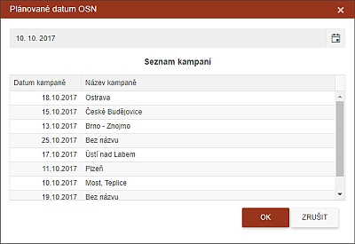

Nastavení data OSN pro jeden spis
Toto nastavení se provádí pomocí ikony v seznamu spisů (viz obrázek, kde je ikonka zeleně orámovaná).
Kliknutím na ikonku (nebo na již vyplněné datum) se otevře dialog sloužící k výběru termínu. V položce je datum vždy nastaveno jako dnešní datum a je třeba jej změnit (pokud ovšem tam inspektor nepojede dnes, pak by stačilo v dialogu stisknout OK).

Datum osobní návštěvy lze vybrat dvojím způsobem. Buď podle definované kampaně, kde kliknutím na název pojmenované kampaně uživatel má možnost vložit datum stejné, jako je v názvu kampaně, nebo kliknutím na malou ikonku v dialogu datumu (znázornění kalendáře). Po té se objeví kalendář, v němž si uživatel vybere termín plánované osobní schůzky.
V kalendáři nelze vybrat datum, které je starší než dnešní datum.
V kalendáři je červeně označené datum, které je centrálou určené jako maximální datum pro uskutečnění osobní návštěvy (viz obrázek - zeleně orámovaný datum).
Vybrané datum je označeno plným kolečkem (viz obrázek - modře orámovaný datum).